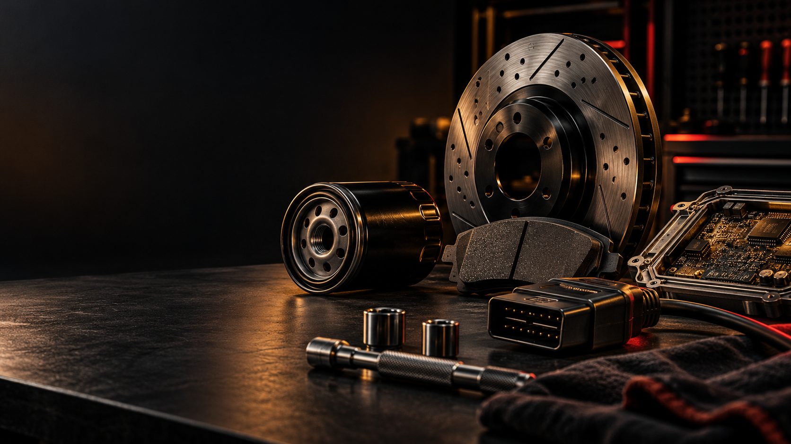

Arbeit eingrenzen.
Symptom oder Vorhaben klar benennen: Service, Bremse, Startproblem, Kühlmittelverlust oder Diagnose.
6006 Performance · Fahrzeugkatalog
Dieser Katalog bündelt Wartung, Reparatur, Fehlerdiagnose und technische Hinweise. Bevor Teile, Flüssigkeiten oder Anzugswerte gewählt werden, muss die genaue Variante bestätigt sein.

Fahrzeugprofil
Modell und Baujahr sind ein Anfang. Für Teile, Flüssigkeiten und Arbeitsabläufe können Motor-, Getriebe-, Achs- und PR-Code entscheidend sein.
Symptom oder Vorhaben klar benennen: Service, Bremse, Startproblem, Kühlmittelverlust oder Diagnose.
Fahrzeugpapiere, Motor- und Getriebecode mit der eingebauten Ausführung abgleichen.
Konkrete Mengen und Anzugswerte nur aus einer bestätigten fahrzeugspezifischen Quelle verwenden.
Statische Übersicht: Die wichtigsten Hinweise bleiben auch ohne JavaScript verfügbar.
Wartung
Öl-Freigabe, Filterausführung, Wechselintervall und Füllmenge gehören immer zur bestätigten Variante. Farbe oder ein Universalprodukt sind keine Freigabe.
Hinweis: Eine rote Öl- oder Temperaturwarnung ist keine Wartungserinnerung. Sicher anhalten und die Ursache prüfen lassen.
Reparatur
Bremsen, Fahrwerk, Antrieb, Elektrik und Kühlung brauchen eine passende Diagnose sowie die richtige Variante. Sicherheitskritische Arbeiten gehören in fachkundige Hände, wenn Ablauf oder Daten nicht gesichert sind.
Fehler & Diagnose
Vollständigen Fehlercode, Warntext, Zeitpunkt und – wenn vorhanden – Live-Daten sichern, bevor etwas gelöscht oder bestellt wird. Ein einzelner Code ist kein Teileauftrag.
Technische Daten
FIN, Motor- und Getriebecode, Ausstattung und die konkrete Arbeit zusammenführen. Erst dann Herstellerdaten oder einen geprüften fahrzeugspezifischen Katalog heranziehen.